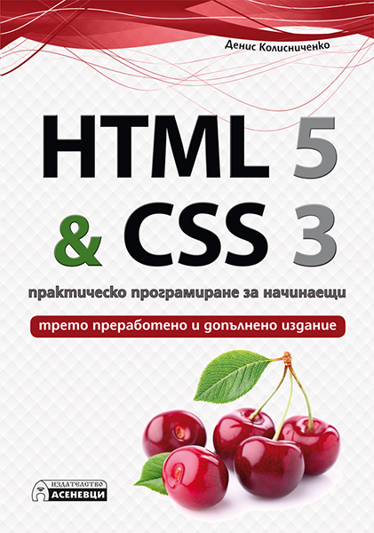

HTML 5 & CSS 3 - практическо програмиране за начинаещи. Трето преработено и допълнено издание.
ISBN:78-619-7356-11-3
Автор: Денис Колисниченко
Корица: Мека
Страници: 348
Формат: 165х235 мм
Година на издаване: 2017
Издател: Асеневци
Анотация
Тази книга ще ви научи как да прилагате на практика HTML 5 и CSS 3 и да се възползвате от богатите възможности, предлагани в новите уеб стандарти. Първата част на книгата е посветена на HTML 5. Освен синтаксиса и правилата за структуриране на кода, в нея ще намерите и таговете, отнасящи се до различните видове текст - абзаци, заглавия, цитати, адреси, коментари и други.
За автора
Денис Николаевич Колисниченко е водещ автор в областта на програмирането и информационните технологии.
Написал е многобройни статии и повече от 30 книги на компютърна тематика, в това число книги за PHP, MySQL, различни Linux дистрибуции (FreeBSD, Fedora, Ubuntu, openSUSE, Mandriva), Windows, интернет, Joomla!, Slaed, PHP-Nuke, Drupal и др.
Съдържание
Част 1. Езикът HTML 5
1.1. Какво ще научите от тази глава? - 10 страница
1.2. Сървъри, клиенти и адреси на възлите в интернет - 10 страница
1.3. Браузъри - 17 страница
1.4.1. Избор на текстов редактор - 20 страница
1.4.2. Синтаксис на HTML - 24 страница
1.5. Особености на HTML 5 - 38 страница
1.6. Собствен уебсървър - 48 страница
1.7. Първи поглед към HTML 6 - 50 страница
1.8. Преди да пристъпим към изучаване на HTML - 52 страница
Глава 2. Структуриране на текст - 54 страница
2.1. Абзаци (таг <Р>) - 54 страница
2.2. Заглавия (тагове <Н1>-<Н6>) - 58 страница
2.3. Номерирани и неномерирани списъци - 61 страница
2.4. Тагове за показване на форматиран текст - 63 страница
2.5. Цитати - 65 страница
2.6. Адрес - 66 страница
2.7. Коментирани в HTML кода - 66 страница
За автора
Денис Николаевич Колисниченко е водещ автор в областта на програмирането и информационните технологии.
Написал е многобройни статии и повече от 30 книги на компютърна тематика, в това число книги за PHP, MySQL, различни Linux дистрибуции (FreeBSD, Fedora, Ubuntu, openSUSE, Mandriva), Windows, интернет Joomla!, Slaed, PHP-Nuke, Drupal и др.